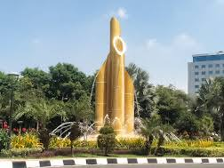
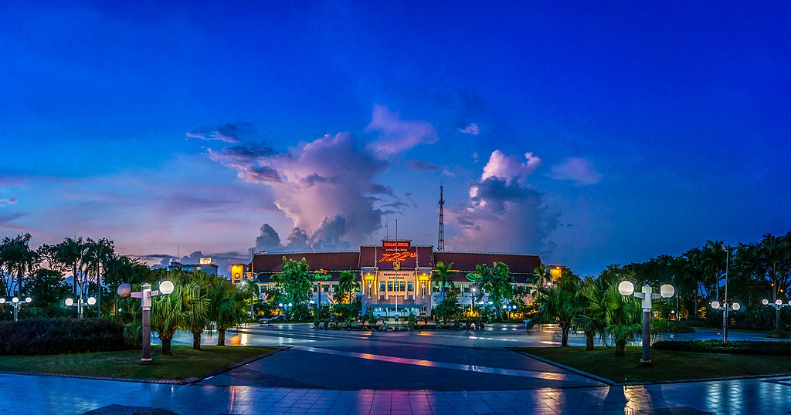

S

R

B

Y
Surabaya adalah ibu kota Provinsi Jawa Timur, Indonesia. Kota ini terletak di pantai utara Pulau Jawa bagian timur, berhadapan dengan Selat Madura dan Laut Jawa. Surabaya adalah kota terbesar kedua di Indonesia setelah Jakarta, dengan luas wilayah 326,81 km persegi. Sebagian besar wilayahnya berupa dataran rendah, dengan ketinggian antara 3 - 6 meter di atas permukaan air laut.